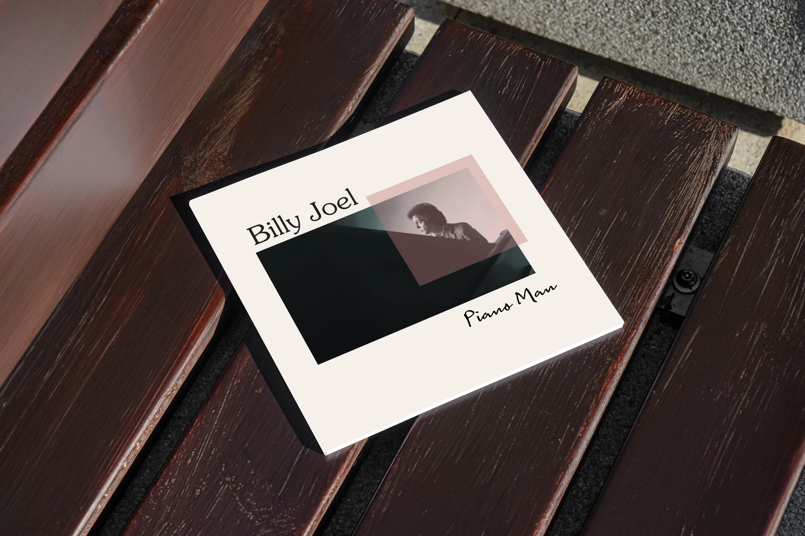
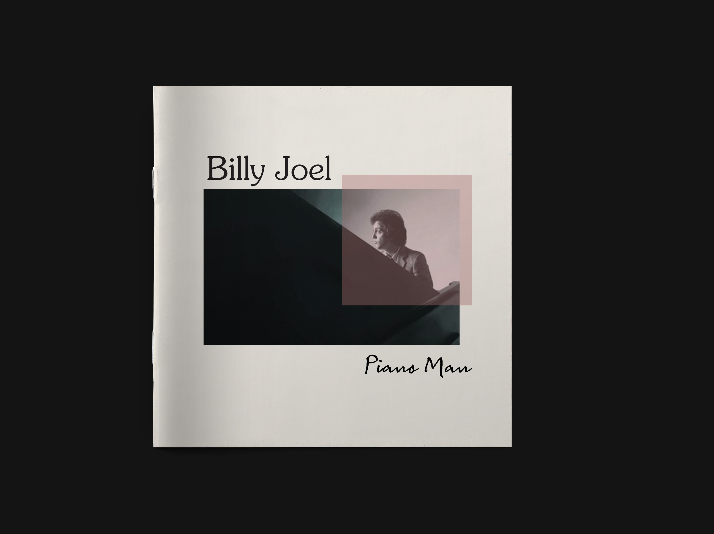
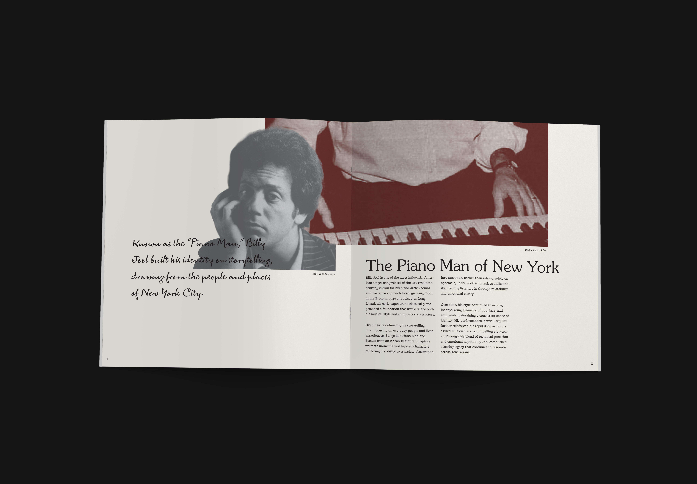
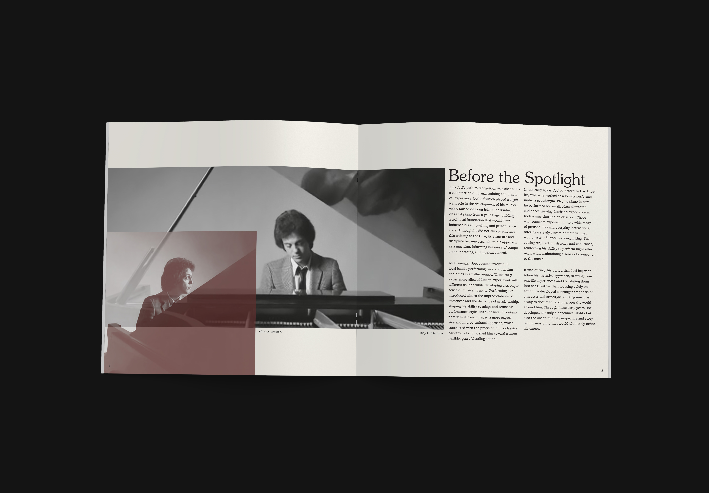
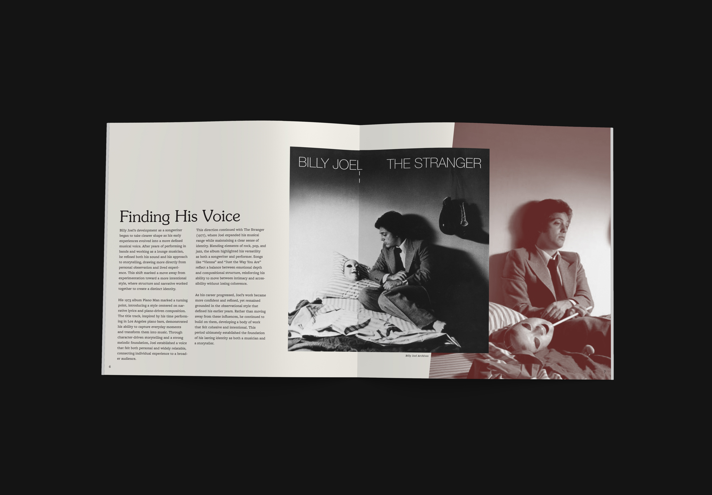
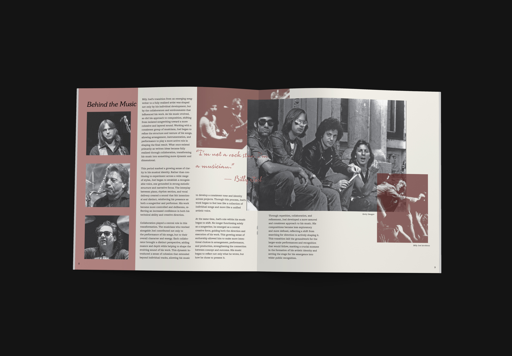
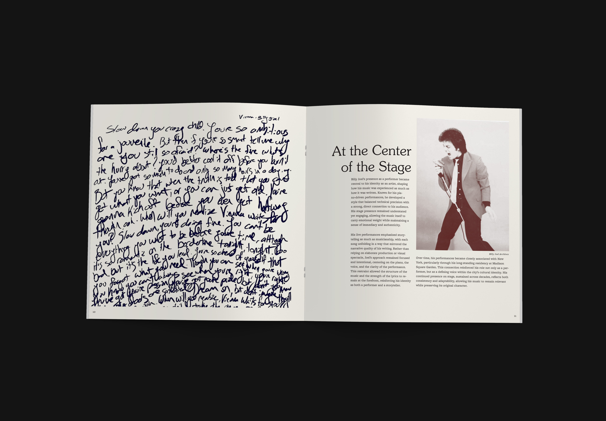
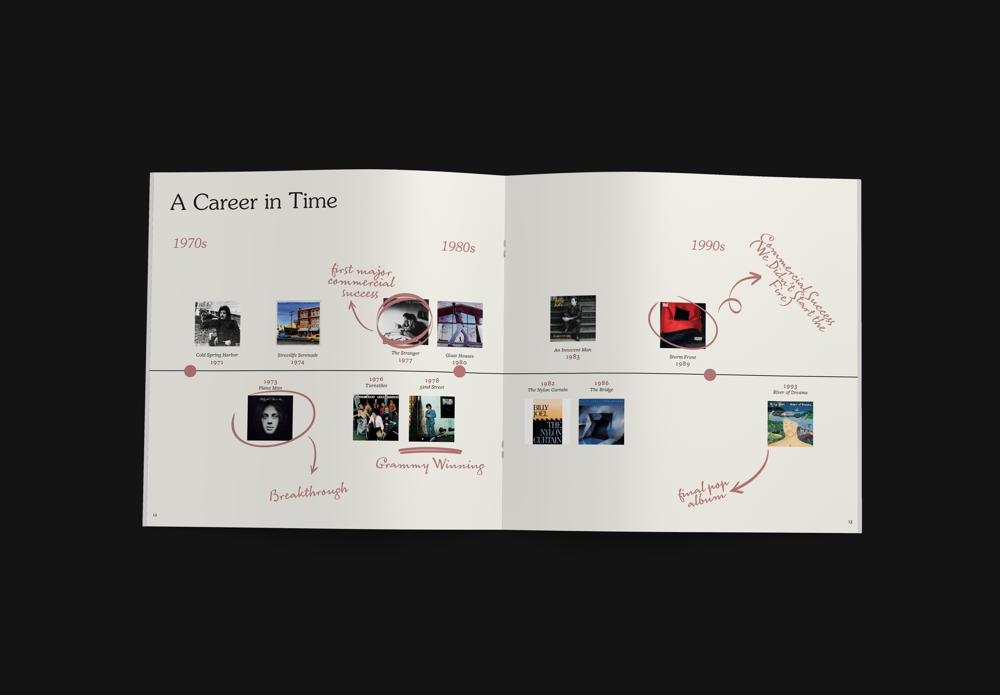
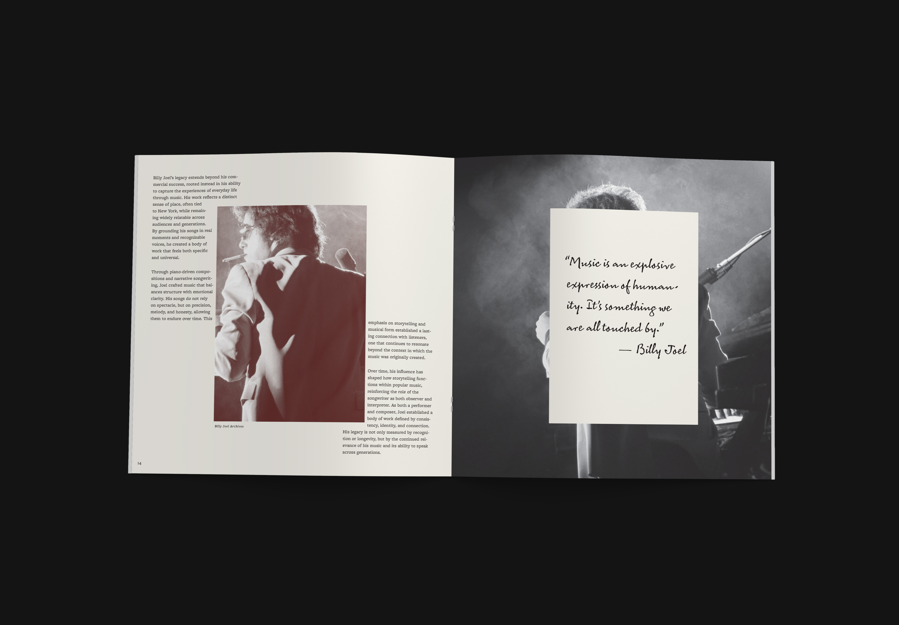
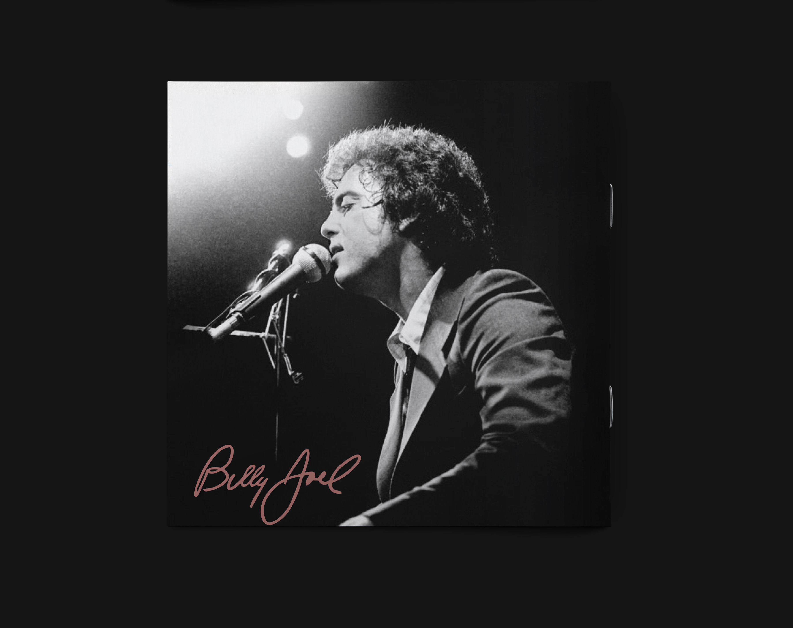

Research Image 1 placeholder
Add moodboard, reference, or research imagery here.
Case Study · Design · 2025
A typographic editorial booklet celebrating the visual identity of a selected band. The project focused on creating a cohesive publication system that translated the band's music and personality into print through hierarchy, pacing, imagery, and expressive typography. Rather than simply documenting the band, the goal was to balance readability with a strong visual atmosphere while maintaining consistency across every spread.










Brief
A typographic editorial booklet celebrating the visual identity of a selected band. The project focused on creating a cohesive publication system that translated the band's music and personality into print through hierarchy, pacing, imagery, and expressive typography. Rather than simply documenting the band, the goal was to balance readability with a strong visual atmosphere while maintaining consistency across every spread.
Research
Add moodboard, reference, or research imagery here.
Add a second reference image or comparative source here.
Sketches
Add thumbnail sketches or early composition studies here.
Add rough layout or variation studies here.
Add another early iteration or refinement here.
Concept
Add one key concept image or process frame here.
Details
Add an application, mockup, or detail image here.
Add a supporting square application image here.
Add a supporting square application image here.
Add a supporting square application image here.
Add a supporting square application image here.
The challenge was designing a multi-page booklet that communicates the band's identity while organizing lyrics, imagery, and supporting content into an engaging reading experience. Every spread needed to function independently while contributing to a unified visual language—a system where form directly reflects the music's energy and emotional arc.
I began by researching the band's visual identity, album artwork, and musical themes to establish an editorial direction. From there I developed a typographic system, grid structure, and color palette that reflected the tone of the music. The grid served as the foundation—strict enough to maintain visual coherence across spreads, flexible enough to accommodate different image sizes and compositional approaches.
Typography was selected and refined to reflect the band's aesthetic. Rather than applying one typeface uniformly, I used scale, weight, and spacing strategically to create visual rhythm. Leading and line length were calibrated for readability, but also to establish pacing—how long the eye stays on a page, and how quickly it moves to the next. Careful attention was given to pacing, contrast, and rhythm so that each spread offered visual variety without sacrificing consistency.
Image placement and layering became a primary design tool. Photographs and illustrations were sequenced to build visual momentum across spreads, using overlapping, cropping, and varied scales to create depth and guide the eye through a deliberate narrative sequence. Throughout the project I refined hierarchy, spacing, and image placement to create a publication that felt dynamic while remaining easy to navigate.
The finished booklet demonstrates my approach to editorial design through thoughtful typography, consistent layout systems, and visual storytelling. The deliverables included the complete editorial booklet, cover design, interior spreads, typography system, and print-ready publication files—a unified package that functions as both a functional information system and an artistic statement.
This project strengthened my understanding of publication design and designing for long-form reading experiences. By treating the booklet as a designed system rather than a collection of layouts, each element reinforces the band's identity while maintaining visual clarity. The result proves that thoughtful editorial design can translate music into print in a way that extends the band's creative vision beyond sound.